Setiap perlengkapan jalan yang terpasang kini punya kode sendiri, riwayat pemeliharaannya tercatat rapi, dan bisa dipindai lewat QR di lapangan.
| Permintaan | Hasilnya di SIPERJAL |
|---|---|
| Setiap barang terpasang, tiap unit punya kode | SUDAHKode otomatis, contoh RMB-014-BTL-26 |
| Lampu PJU: kode register dan kode lampu | SUDAHKode register PJU-001-SPE-26 DITUNDAkode lampu, sesuai arahan Bapak |
| Unduh daftar terpasang, koordinat bisa diklik ke Maps | SUDAHUnduh Excel / CSV; koordinat jadi tautan Google Maps |
| Riwayat pemeliharaan: dari laporan dan input petugas | SUDAHLaporan selesai otomatis masuk riwayat; petugas juga bisa mencatat pemeliharaan rutin |
| Riwayat per barang dan halaman riwayat per tanggal | SUDAHKlik unit untuk melihat riwayatnya; tab Riwayat menampilkan per tanggal |
| QR per unit (bisa banyak sekaligus), dipindai menampilkan info dan riwayat | SUDAHQR satu unit atau cetak label massal; scan membuka halaman info |
Semuanya berpusat pada kode register: satu kode, satu unit, satu riwayat.
Tidak perlu mengetik. Kode muncul begitu perlengkapan tercatat terpasang.
Kode tetap sama walau alamat atau data lain diperbarui, jadi label yang tercetak aman.
Bila sebuah unit dihapus, nomornya tidak diberikan ke unit lain.
| Jenis | Cara memberi kode | Contoh |
|---|---|---|
| Rambu, lampu PJU, lampu peringatan, traffic light, kerucut | PER UNITTiap unit punya kode sendiri | 5 rambu di satu titik = 5 kode: RMB-001 sampai RMB-005 |
| Marka jalan, guardrail, pita getar, ZoSS | PER RUASSatu kode untuk satu ruas atau paket | Marka 120 meter = 1 kode (MRK-001), bukan 120 kode |
Admin menentukan tiap jenis di Pengaturan → Perlengkapan, kolom Per unit / Per ruas. Usulan ini perlu persetujuan Bapak (lihat slide "Mohon arahan Bapak").
Gabungan perlengkapan dari usulan SIPERJAL dan yang terpasang sebelum SIPERJAL.
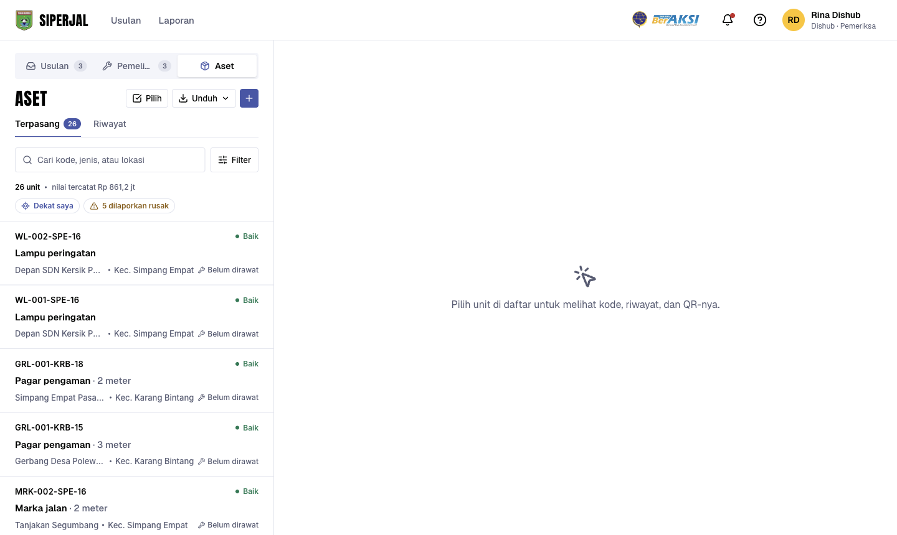
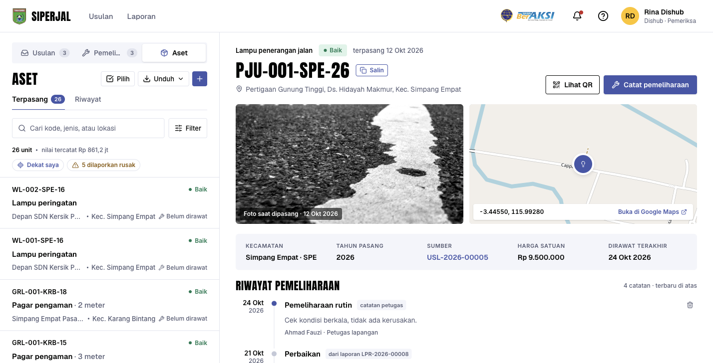
Laporan yang selesai otomatis jadi catatan riwayat. Petugas tidak perlu mengetik ulang.
Unit yang sudah punya riwayat tidak bisa dihapus.
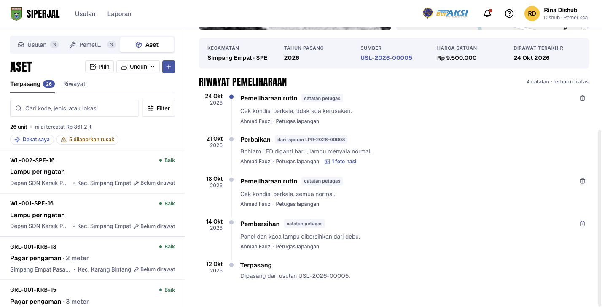
Ketuk Urungkan di pemberitahuan yang muncul. Catatan sendiri juga bisa dihapus selama 10 menit.
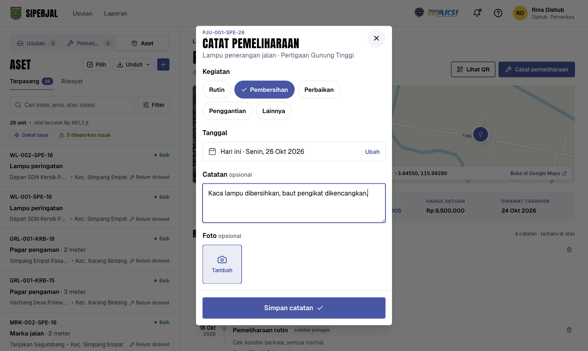
Otomatis melihat catatannya sendiri.
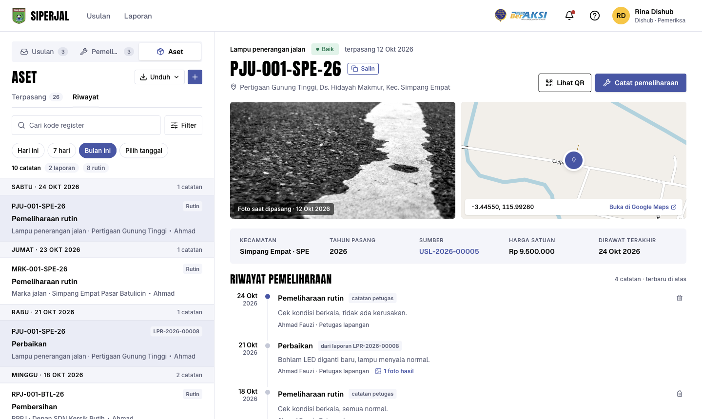
Detail laporan kini menyebut kode unit, jadi petugas tahu persis perlengkapan yang dimaksud.
Catatan riwayat ikut dihapus, jadi tidak ada data yang menggantung.
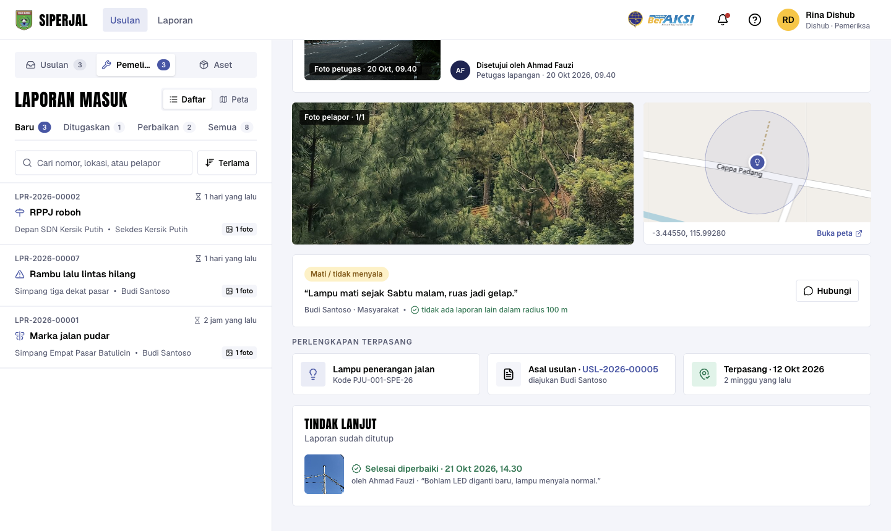
Alamat halaman info unit itu, misalnya …/aset/PJU-001-SPE-26. Cukup kamera HP biasa.
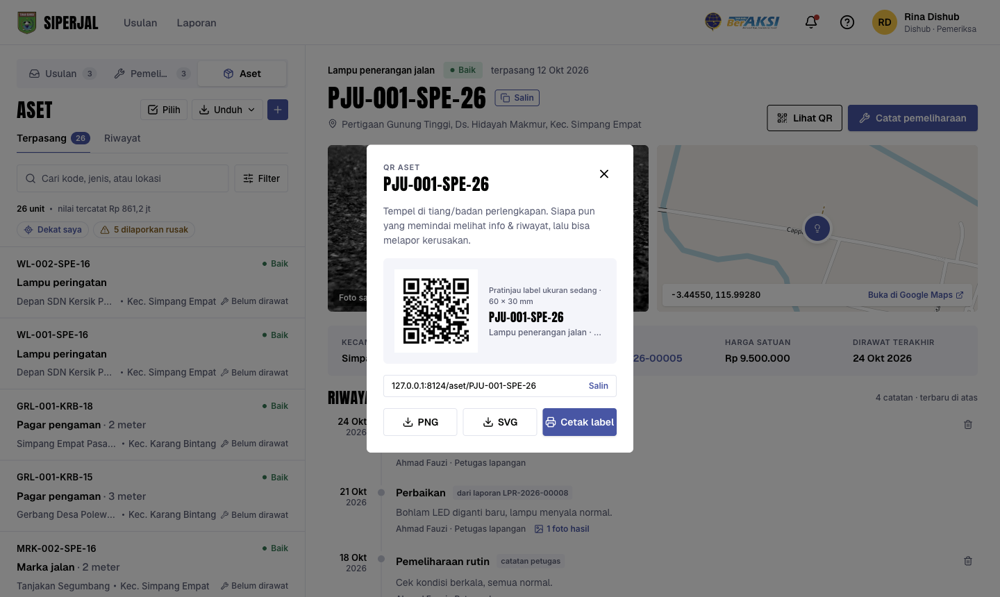
Maksimal 200 label sekali unduh. Untuk lebih banyak, cetak bertahap per kecamatan. Unit yang belum berkode tidak bisa dicetak.
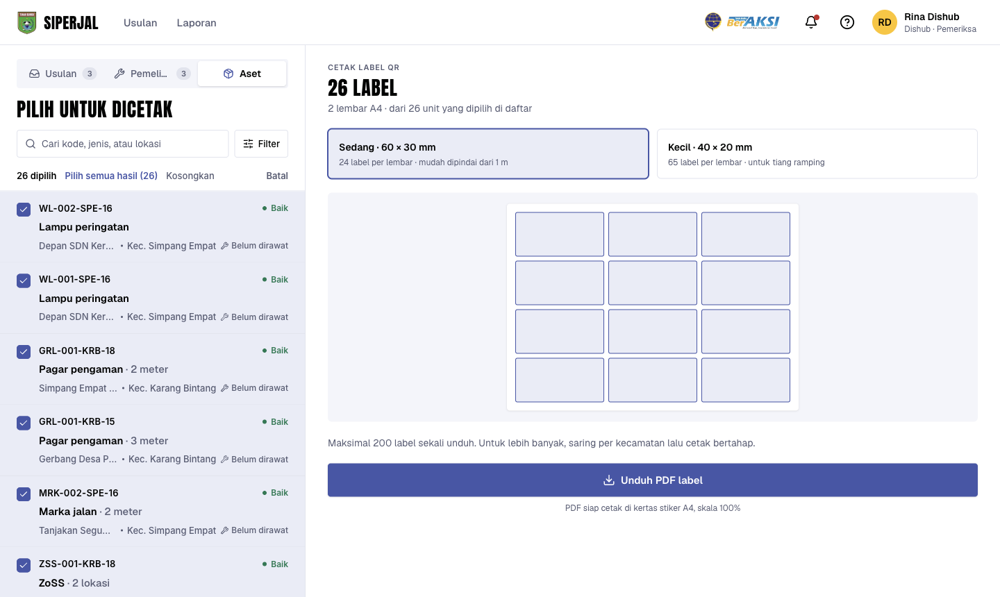
Cetak satu lembar uji dan pindai dengan HP. Pastikan terbaca di bahan stiker yang dipakai.
Satu lembar siap dalam hitungan detik. 200 label bisa memakan waktu sekitar setengah menit.
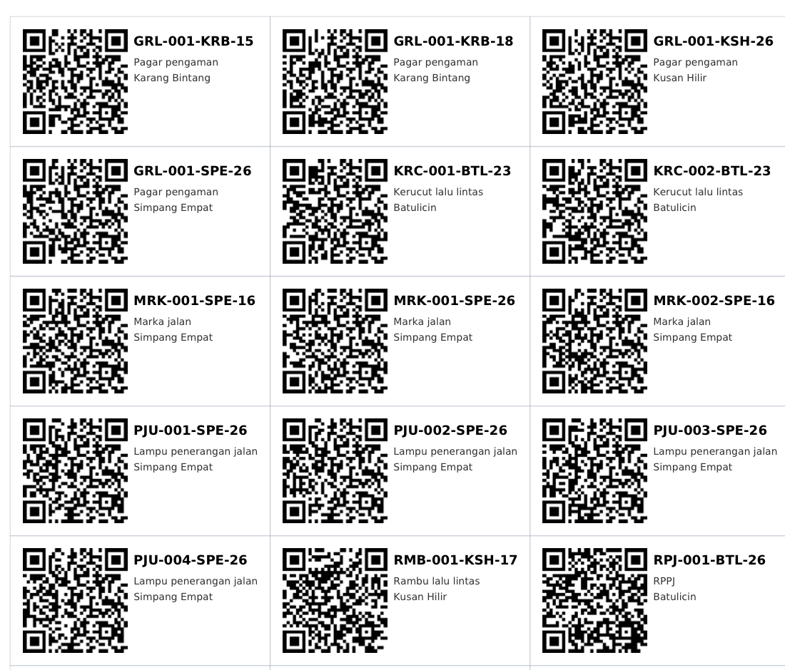
Ketik kode yang tercetak di samping QR. Tetap bisa melapor tanpa kode.
Harga, nama petugas, nomor laporan, dan foto.
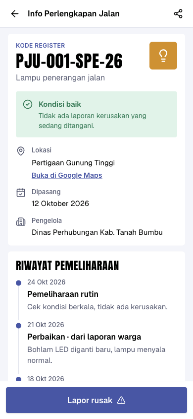
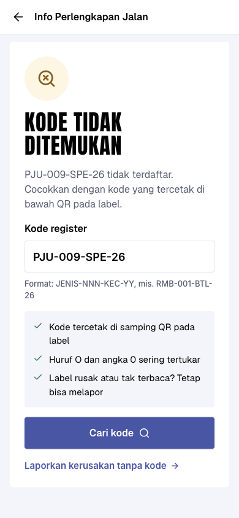
Koordinator dan petugas lapangan boleh mencatat. Admin hanya melihat.
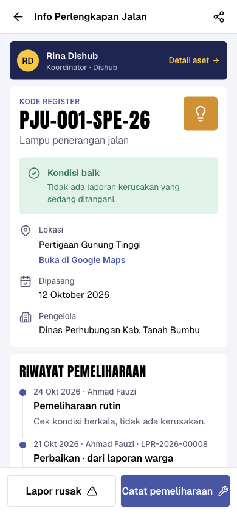
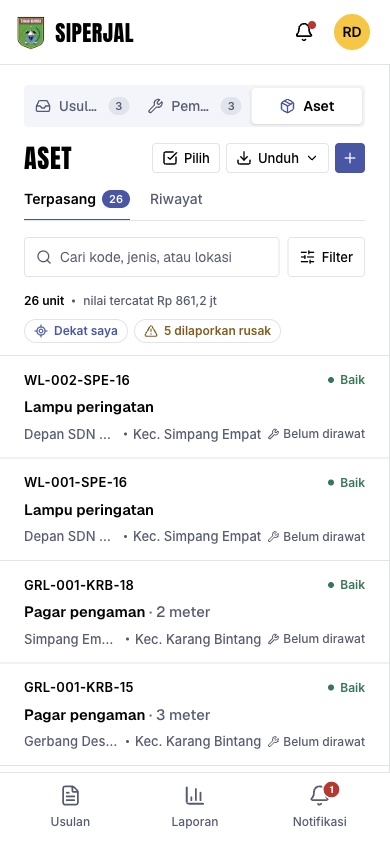
Lima rambu di satu tiang tidak lagi menjadi lima pin bertumpuk.
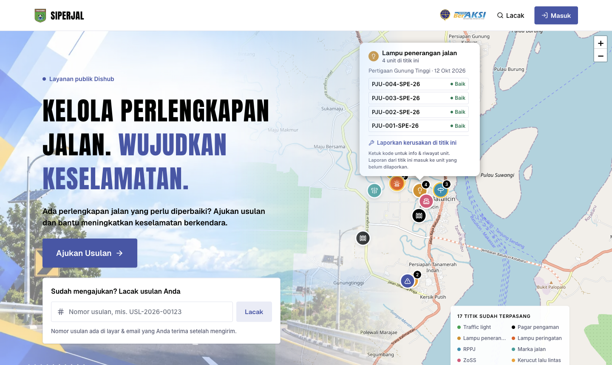
Kode, jenis, jumlah, kecamatan, desa, alamat, koordinat, tahun pasang, sumber, harga, status, dan pemeliharaan terakhir.
Tab Riwayat punya unduhan sendiri: Excel, CSV, atau PDF.
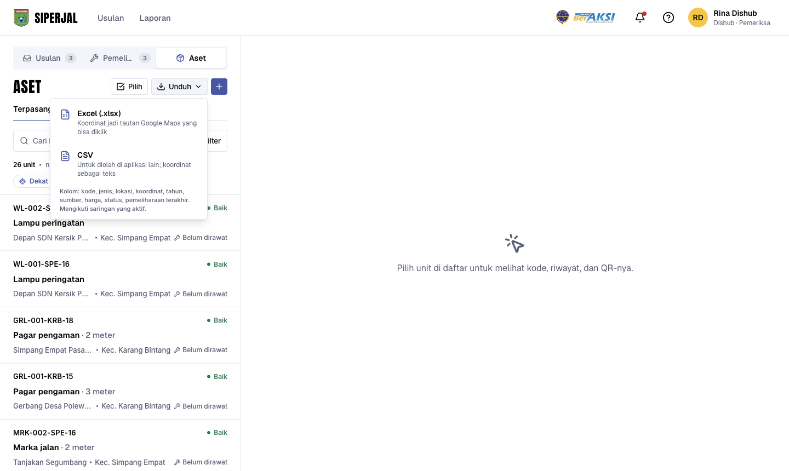
Unit tetap tercatat; kodenya menyusul otomatis begitu kode singkat diisi.
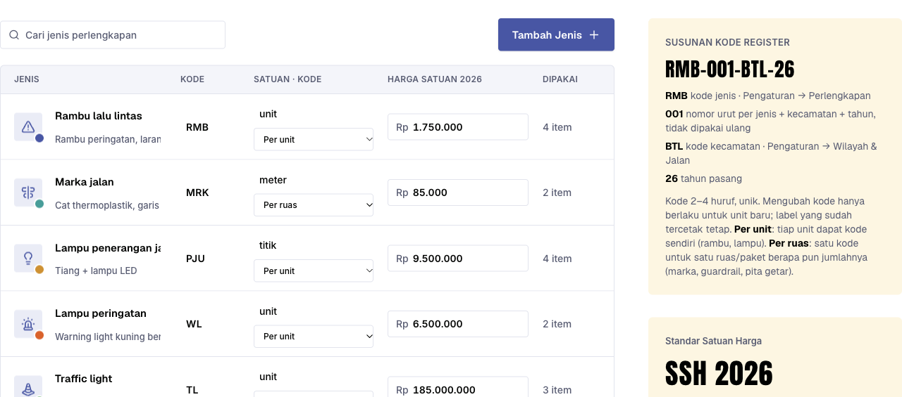
Mengubah kode hanya berlaku untuk unit baru. Label yang sudah tercetak tidak berubah.
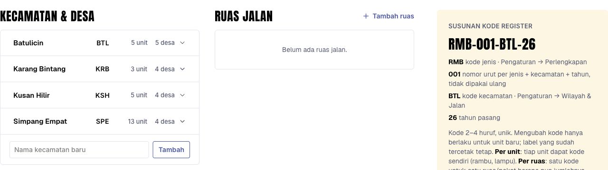
| Keadaan sebelumnya | Setelah pembaruan |
|---|---|
| Satu baris berisi banyak unit (mis. rambu × 5) | Dipecah jadi 5 unit, masing-masing berkode. Baris asli menjadi unit pertama. |
| Perlengkapan per ruas (marka, guardrail) | Tetap satu baris berjumlah, dengan satu kode. |
| Data tanpa kecamatan atau tahun | Tetap tercatat sebagai BELUM BERKODE. Kode dibuat otomatis begitu datanya dilengkapi. |
| Laporan kerusakan yang sudah selesai | Otomatis menjadi catatan di riwayat unitnya. |
| Tautan dan QR lama (/lapor/…) | Tetap berfungsi. |
Kami membuat cadangan database dulu, karena pemecahan unit tidak bisa dibatalkan sepenuhnya.
| Peran | Yang bisa dilakukan |
|---|---|
| Masyarakat (tanpa akun) | Memindai QR, melihat info dan riwayat, melaporkan kerusakan |
| Dishub · Koordinator | Semua fitur Aset: melihat, mencatat pemeliharaan, mengunduh, cetak label, mengelola data lama |
| Dishub · Petugas lapangan | Melihat Aset, mencatat pemeliharaan, riwayat miliknya, mengerjakan laporan yang ditugaskan |
| Admin | Mengatur kode singkat dan jenis; di Aset hanya melihat, mengunduh, dan mencetak label |
Kemampuan kamera HP memindai label hasil cetak bergantung pada bahan stiker dan printer. Kami sarankan cetak uji satu lembar sebelum mencetak banyak.
| Pertanyaan | Yang kami pakai sementara |
|---|---|
| 1. Kode singkat resmi untuk tiap jenis perlengkapan dan tiap kecamatan | Contoh: RMB, PJU, WL, MRK, GRL; BTL, SPE, KRB. Mudah diganti admin. |
| 2. Marka, guardrail, pita getar, ZoSS: setuju satu kode per ruas, bukan per meter? | Satu kode per ruas atau paket |
| 3. Halaman scan publik: boleh menampilkan foto dan catatan perbaikan? | Hanya tanggal, kegiatan, dan catatan singkat. Tanpa foto |
| 4. Unit lama tanpa tahun atau kecamatan yang jelas | Dibiarkan "belum berkode" sampai Dishub melengkapi |
| 5. Ukuran fisik label QR yang akan dicetak | Sedang 60×30 mm dan kecil 40×20 mm |
Kode lampu PJU (kode kedua) ditunda sesuai arahan Bapak; strukturnya sudah disiapkan bila nanti diperlukan.